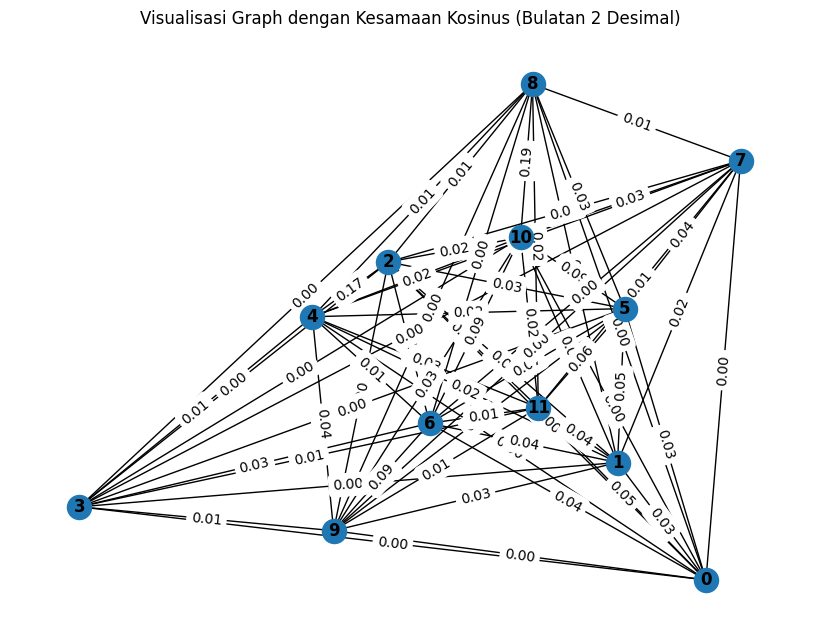
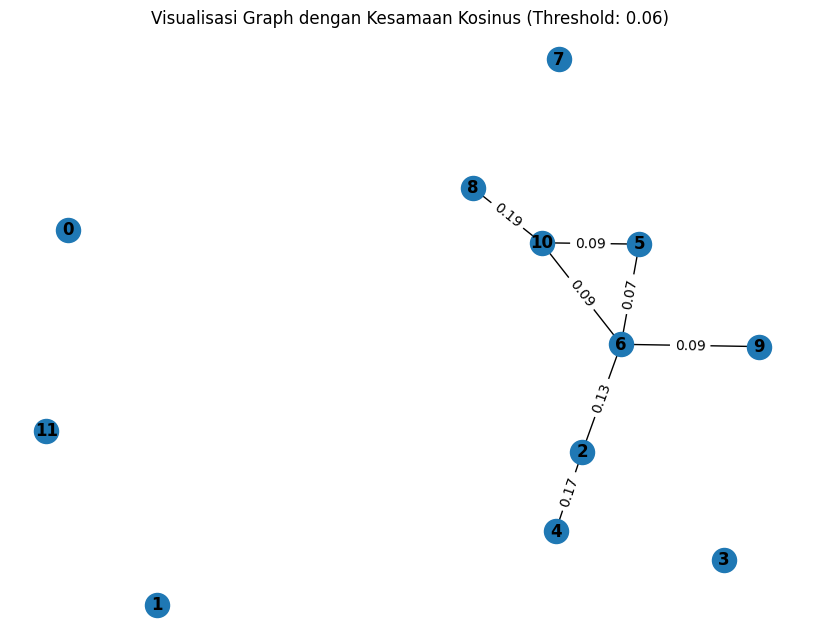
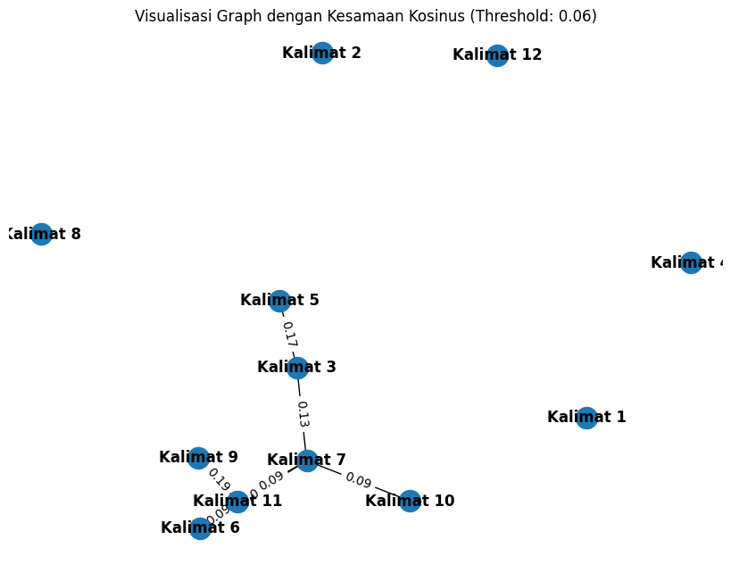
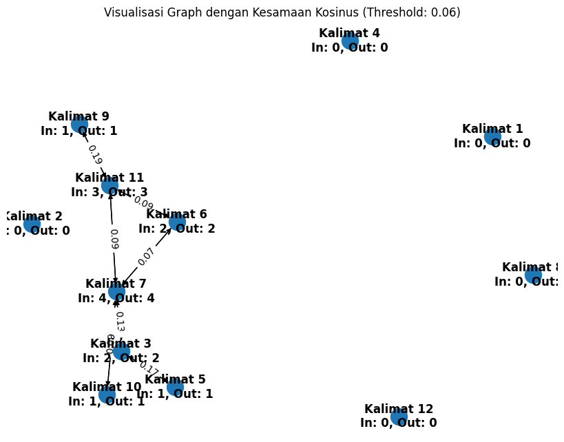

Search Kalimat Penting Dalam Berita#
import requests
from bs4 import BeautifulSoup
import csv
def scrape_detik():
url = 'https://www.detik.com/search/searchnews?query=pemilu+2024&sortby=time&page=1'
req = requests.get(url)
sop = BeautifulSoup(req.text, 'html.parser')
li = sop.find('div', class_='list media_rows list-berita')
lin = li.find_all('article')
x = lin[0] # Ambil hanya satu artikel, yaitu yang pertama
link = x.find('a')['href']
date = x.find('a').find('span', class_='date').text.replace('WIB','').replace('detikNews','').split(',')[1]
headline = x.find('a').find('h2').text
ge_ = requests.get(link).text
sop_ = BeautifulSoup(ge_, 'html.parser')
content = sop_.find('div', class_='detail__body-text itp_bodycontent')
paragraphs = content.find_all('p')
content_ = ''.join([p.get_text(strip=True) for p in paragraphs])
return content_
# Panggil fungsi untuk scraping satu artikel
data = scrape_detik()
print(data)
Ketua Umum Partai Amanat Nasional (PAN) Zulkifli Hasan (Zulhas) berpesan soal persaingan yang terjadi pada Pemilu 2024. Zulhas mengingatkan meski ada perbedaan, semua pihak tetap saudara satu bangsa.Pesan itu disampaikannya dalam kegiatan 'Do'a & Sholawat Pemilu Damai' bersama Habib Syech Bin Abdul Qodir Assegaf di Bumi Perkemahan Pramuka Cibubur."Kita berselawat dan berdoa agar pemilunya damai. Walaupun persaingannya ketat, tetapi kita saudara. Boleh beda, tapi kita saudara se-bangsa dan se-Tanah Air," ujar Zulhas, Senin (27/11/2023).ADVERTISEMENTSCROLL TO CONTINUE WITH CONTENT"Kita berselawat agar pemilunya damai dan lancar, demokratis. Yang terpilih yang diharapkan oleh rakyat," imbuhnya.Pada kesempatan itu, Zulhas juga mengajak jemaah yang hadir dalam acara itu untuk mendoakan warga Palestina agar meraih kemenangan dalam peperangannya melawan Israel."Kita doakan saudara-saudara kita yang ada di Palestina. Mudah-mudahan diberikan kekuatan, ketabahan, kesabaran, dan kemenangan," ucapnya.Selain itu, Zulhas menyebutkan kondisi Gaza terkini. Menurutnya, Indonesia telah ikut berperan dan memberi bantuan untuk Gaza."Alhamdulillah hari ini kita lihat di Palestina, walaupun pendek waktunya, tapi sudah ada gencatan senjata, sudah ada pertukaran tawanan. Banyak sedikit ada peran kita, peran Presiden Republik Indonesia selain memberi bantuan dan berdoa," tuturnya.Untuk itu, ia mengajak semua pihak termasuk Nahdlatul Ulama dan Muhammadiyah untuk segera mendoakan kedamaian pemilu di Indonesia dan warga Palestina."Semoga Allah memberikan kekuatan dan pertolongan dan keberkahan kepada kita semua," pungkasnya.Sekedar informasi, turut hadir dalam kegiatan itu TKN Prabowo-Gibran Nusron Wahid, DPW PAN DKI Eko Patrio, dan Ketua Umum DPP PAN Intan Fauzi.
import nltk
from nltk.tokenize import sent_tokenize
nltk.download('punkt')
# Fungsi untuk menghapus tanda baca, tokenisasi, dan stemming per kata dalam setiap kalimat
def tokenisasi_text(teks):
# Tokenisasi kalimat
kalimat = sent_tokenize(teks)
return kalimat
sentence = tokenisasi_text(data)
print(sentence)
[nltk_data] Downloading package punkt to /root/nltk_data...
[nltk_data] Unzipping tokenizers/punkt.zip.
['Ketua Umum Partai Amanat Nasional (PAN) Zulkifli Hasan (Zulhas) berpesan soal persaingan yang terjadi pada Pemilu 2024.', "Zulhas mengingatkan meski ada perbedaan, semua pihak tetap saudara satu bangsa.Pesan itu disampaikannya dalam kegiatan 'Do'a & Sholawat Pemilu Damai' bersama Habib Syech Bin Abdul Qodir Assegaf di Bumi Perkemahan Pramuka Cibubur.", '"Kita berselawat dan berdoa agar pemilunya damai.', 'Walaupun persaingannya ketat, tetapi kita saudara.', 'Boleh beda, tapi kita saudara se-bangsa dan se-Tanah Air," ujar Zulhas, Senin (27/11/2023).ADVERTISEMENTSCROLL TO CONTINUE WITH CONTENT"Kita berselawat agar pemilunya damai dan lancar, demokratis.', 'Yang terpilih yang diharapkan oleh rakyat," imbuhnya.Pada kesempatan itu, Zulhas juga mengajak jemaah yang hadir dalam acara itu untuk mendoakan warga Palestina agar meraih kemenangan dalam peperangannya melawan Israel.', '"Kita doakan saudara-saudara kita yang ada di Palestina.', 'Mudah-mudahan diberikan kekuatan, ketabahan, kesabaran, dan kemenangan," ucapnya.Selain itu, Zulhas menyebutkan kondisi Gaza terkini.', 'Menurutnya, Indonesia telah ikut berperan dan memberi bantuan untuk Gaza.', '"Alhamdulillah hari ini kita lihat di Palestina, walaupun pendek waktunya, tapi sudah ada gencatan senjata, sudah ada pertukaran tawanan.', 'Banyak sedikit ada peran kita, peran Presiden Republik Indonesia selain memberi bantuan dan berdoa," tuturnya.Untuk itu, ia mengajak semua pihak termasuk Nahdlatul Ulama dan Muhammadiyah untuk segera mendoakan kedamaian pemilu di Indonesia dan warga Palestina.', '"Semoga Allah memberikan kekuatan dan pertolongan dan keberkahan kepada kita semua," pungkasnya.Sekedar informasi, turut hadir dalam kegiatan itu TKN Prabowo-Gibran Nusron Wahid, DPW PAN DKI Eko Patrio, dan Ketua Umum DPP PAN Intan Fauzi.']
import math
from collections import Counter
import pandas as pd
# Menghitung jumlah kata dalam setiap kalimat
tf_kalimat = [Counter(words.split()) for words in sentence]
# Menghitung IDF (Inverse Document Frequency)
def calculate_tf_idf(tf_kalimat):
num_documents = len(tf_kalimat)
idf_values = {}
# Mencari setiap kata dalam setiap kalimat untuk menghitung IDF
for tf in tf_kalimat:
for word, count in tf.items():
if word in idf_values:
idf_values[word] += 1
else:
idf_values[word] = 1
tf_idf_kalimat = []
for tf in tf_kalimat:
tf_idf = {}
for word, count in tf.items():
tf_idf[word] = (count / len(tf)) * math.log(num_documents / idf_values[word])
tf_idf_kalimat.append(tf_idf)
return tf_idf_kalimat
# Hasil TF-IDF
hasil_tf_idf = calculate_tf_idf(tf_kalimat)
# Mengonversi list of dicts ke dalam DataFrame
df_tf_idf = pd.DataFrame(hasil_tf_idf)
df_tf_idf.fillna(0, inplace=True) # Mengganti nilai NaN dengan 0
# Tampilkan hasil dalam DataFrame
df_tf_idf
| Ketua | Umum | Partai | Amanat | Nasional | (PAN) | Zulkifli | Hasan | (Zulhas) | berpesan | ... | Nusron | Wahid, | DPW | PAN | DKI | Eko | Patrio, | DPP | Intan | Fauzi. | |
|---|---|---|---|---|---|---|---|---|---|---|---|---|---|---|---|---|---|---|---|---|---|
| 0 | 0.105398 | 0.105398 | 0.146171 | 0.146171 | 0.146171 | 0.146171 | 0.146171 | 0.146171 | 0.146171 | 0.146171 | ... | 0.000000 | 0.000000 | 0.000000 | 0.000000 | 0.000000 | 0.000000 | 0.000000 | 0.000000 | 0.000000 | 0.000000 |
| 1 | 0.000000 | 0.000000 | 0.000000 | 0.000000 | 0.000000 | 0.000000 | 0.000000 | 0.000000 | 0.000000 | 0.000000 | ... | 0.000000 | 0.000000 | 0.000000 | 0.000000 | 0.000000 | 0.000000 | 0.000000 | 0.000000 | 0.000000 | 0.000000 |
| 2 | 0.000000 | 0.000000 | 0.000000 | 0.000000 | 0.000000 | 0.000000 | 0.000000 | 0.000000 | 0.000000 | 0.000000 | ... | 0.000000 | 0.000000 | 0.000000 | 0.000000 | 0.000000 | 0.000000 | 0.000000 | 0.000000 | 0.000000 | 0.000000 |
| 3 | 0.000000 | 0.000000 | 0.000000 | 0.000000 | 0.000000 | 0.000000 | 0.000000 | 0.000000 | 0.000000 | 0.000000 | ... | 0.000000 | 0.000000 | 0.000000 | 0.000000 | 0.000000 | 0.000000 | 0.000000 | 0.000000 | 0.000000 | 0.000000 |
| 4 | 0.000000 | 0.000000 | 0.000000 | 0.000000 | 0.000000 | 0.000000 | 0.000000 | 0.000000 | 0.000000 | 0.000000 | ... | 0.000000 | 0.000000 | 0.000000 | 0.000000 | 0.000000 | 0.000000 | 0.000000 | 0.000000 | 0.000000 | 0.000000 |
| 5 | 0.000000 | 0.000000 | 0.000000 | 0.000000 | 0.000000 | 0.000000 | 0.000000 | 0.000000 | 0.000000 | 0.000000 | ... | 0.000000 | 0.000000 | 0.000000 | 0.000000 | 0.000000 | 0.000000 | 0.000000 | 0.000000 | 0.000000 | 0.000000 |
| 6 | 0.000000 | 0.000000 | 0.000000 | 0.000000 | 0.000000 | 0.000000 | 0.000000 | 0.000000 | 0.000000 | 0.000000 | ... | 0.000000 | 0.000000 | 0.000000 | 0.000000 | 0.000000 | 0.000000 | 0.000000 | 0.000000 | 0.000000 | 0.000000 |
| 7 | 0.000000 | 0.000000 | 0.000000 | 0.000000 | 0.000000 | 0.000000 | 0.000000 | 0.000000 | 0.000000 | 0.000000 | ... | 0.000000 | 0.000000 | 0.000000 | 0.000000 | 0.000000 | 0.000000 | 0.000000 | 0.000000 | 0.000000 | 0.000000 |
| 8 | 0.000000 | 0.000000 | 0.000000 | 0.000000 | 0.000000 | 0.000000 | 0.000000 | 0.000000 | 0.000000 | 0.000000 | ... | 0.000000 | 0.000000 | 0.000000 | 0.000000 | 0.000000 | 0.000000 | 0.000000 | 0.000000 | 0.000000 | 0.000000 |
| 9 | 0.000000 | 0.000000 | 0.000000 | 0.000000 | 0.000000 | 0.000000 | 0.000000 | 0.000000 | 0.000000 | 0.000000 | ... | 0.000000 | 0.000000 | 0.000000 | 0.000000 | 0.000000 | 0.000000 | 0.000000 | 0.000000 | 0.000000 | 0.000000 |
| 10 | 0.000000 | 0.000000 | 0.000000 | 0.000000 | 0.000000 | 0.000000 | 0.000000 | 0.000000 | 0.000000 | 0.000000 | ... | 0.000000 | 0.000000 | 0.000000 | 0.000000 | 0.000000 | 0.000000 | 0.000000 | 0.000000 | 0.000000 | 0.000000 |
| 11 | 0.057799 | 0.057799 | 0.000000 | 0.000000 | 0.000000 | 0.000000 | 0.000000 | 0.000000 | 0.000000 | 0.000000 | ... | 0.080158 | 0.080158 | 0.080158 | 0.160317 | 0.080158 | 0.080158 | 0.080158 | 0.080158 | 0.080158 | 0.080158 |
12 rows × 175 columns
import math
from collections import Counter
from sklearn.metrics.pairwise import cosine_similarity
import pandas as pd
# Diasumsikan hasil_tf_idf adalah list yang berisi nilai TF-IDF
# Mengonversi list dari kamus ke DataFrame pandas
df_tf_idf = pd.DataFrame(hasil_tf_idf)
df_tf_idf = df_tf_idf.fillna(0) # Mengganti nilai NaN dengan 0
# Mengonversi DataFrame ke array NumPy untuk perhitungan kesamaan kosinus
tfidf_matrix = df_tf_idf.to_numpy()
# Menghitung kesamaan kosinus
similarity_matrix = cosine_similarity(tfidf_matrix)
df_tf_idf = pd.DataFrame(similarity_matrix)
kalimat = ["Kalimat " + str(i) for i in range(1, len(similarity_matrix) + 1)]
df_tf_idf = df_tf_idf.set_axis(kalimat, axis=0)
df_tf_idf = df_tf_idf.set_axis(kalimat, axis=1)
df_tf_idf
| Kalimat 1 | Kalimat 2 | Kalimat 3 | Kalimat 4 | Kalimat 5 | Kalimat 6 | Kalimat 7 | Kalimat 8 | Kalimat 9 | Kalimat 10 | Kalimat 11 | Kalimat 12 | |
|---|---|---|---|---|---|---|---|---|---|---|---|---|
| Kalimat 1 | 1.000000 | 0.026480 | 0.000000 | 0.000000 | 0.000000 | 0.034316 | 0.041047 | 0.000000 | 0.000000 | 0.000000 | 0.000000 | 0.049624 |
| Kalimat 2 | 0.026480 | 1.000000 | 0.000000 | 0.000000 | 0.023534 | 0.051981 | 0.039049 | 0.017871 | 0.000000 | 0.027436 | 0.053150 | 0.041291 |
| Kalimat 3 | 0.000000 | 0.000000 | 1.000000 | 0.000000 | 0.174748 | 0.033297 | 0.133066 | 0.011447 | 0.014854 | 0.000000 | 0.022218 | 0.021618 |
| Kalimat 4 | 0.000000 | 0.000000 | 0.000000 | 1.000000 | 0.012638 | 0.000000 | 0.027888 | 0.000000 | 0.000000 | 0.013063 | 0.000000 | 0.010091 |
| Kalimat 5 | 0.000000 | 0.023534 | 0.174748 | 0.012638 | 1.000000 | 0.015250 | 0.014549 | 0.010485 | 0.013606 | 0.035360 | 0.020351 | 0.025066 |
| Kalimat 6 | 0.034316 | 0.051981 | 0.033297 | 0.000000 | 0.015250 | 1.000000 | 0.067303 | 0.038688 | 0.025101 | 0.000000 | 0.087749 | 0.056872 |
| Kalimat 7 | 0.041047 | 0.039049 | 0.133066 | 0.027888 | 0.014549 | 0.067303 | 1.000000 | 0.000000 | 0.000000 | 0.086083 | 0.087619 | 0.011618 |
| Kalimat 8 | 0.000000 | 0.017871 | 0.011447 | 0.000000 | 0.010485 | 0.038688 | 0.000000 | 1.000000 | 0.008629 | 0.000000 | 0.030117 | 0.012559 |
| Kalimat 9 | 0.000000 | 0.000000 | 0.014854 | 0.000000 | 0.013606 | 0.025101 | 0.000000 | 0.008629 | 1.000000 | 0.000000 | 0.188302 | 0.016296 |
| Kalimat 10 | 0.000000 | 0.027436 | 0.000000 | 0.013063 | 0.035360 | 0.000000 | 0.086083 | 0.000000 | 0.000000 | 1.000000 | 0.026422 | 0.005442 |
| Kalimat 11 | 0.000000 | 0.053150 | 0.022218 | 0.000000 | 0.020351 | 0.087749 | 0.087619 | 0.030117 | 0.188302 | 0.026422 | 1.000000 | 0.024376 |
| Kalimat 12 | 0.049624 | 0.041291 | 0.021618 | 0.010091 | 0.025066 | 0.056872 | 0.011618 | 0.012559 | 0.016296 | 0.005442 | 0.024376 | 1.000000 |
import math
from collections import Counter
import networkx as nx
from sklearn.metrics.pairwise import cosine_similarity
import pandas as pd
import matplotlib.pyplot as plt
# Diasumsikan similarity_matrix sudah didefinisikan sebelumnya
# Contoh similarity_matrix
G = nx.Graph()
for i in range(len(similarity_matrix)):
for j in range(len(similarity_matrix[0])):
if i != j:
similarity = round(similarity_matrix[i][j], 2) # Bulatkan nilai ke 2 angka dibelakang koma
G.add_edge(i, j, weight=similarity)
# Visualisasi grafik
plt.figure(figsize=(8, 6))
pos = nx.spring_layout(G) # Menentukan layout grafik
nx.draw(G, pos, with_labels=True, font_weight='bold') # Menggambar grafik dengan label node
edge_labels = nx.get_edge_attributes(G, 'weight') # Mendapatkan atribut edge (bobot)
# Mengubah nilai bobot menjadi string dengan 2 angka di belakang koma
edge_labels = {(i, j): f"{weight:.2f}" for (i, j), weight in edge_labels.items()}
nx.draw_networkx_edge_labels(G, pos, edge_labels=edge_labels) # Menampilkan label bobot pada edge
plt.title("Visualisasi Graph dengan Kesamaan Kosinus (Bulatan 2 Desimal)")
plt.show()

import math
from collections import Counter
import networkx as nx
from sklearn.metrics.pairwise import cosine_similarity
import pandas as pd
import matplotlib.pyplot as plt
# Diasumsikan similarity_matrix sudah didefinisikan sebelumnya
# Contoh similarity_matrix
G = nx.Graph()
threshold = 0.06 # Threshold untuk menyambungkan node
# Tambahkan semua node ke grafik
G.add_nodes_from(range(len(similarity_matrix)))
# Tambahkan edge antara node yang nilainya melebihi threshold
for i in range(len(similarity_matrix)):
for j in range(len(similarity_matrix[0])):
if i != j and similarity_matrix[i][j] > threshold:
similarity = round(similarity_matrix[i][j], 2) # Bulatkan nilai ke 2 angka dibelakang koma
G.add_edge(i, j, weight=similarity)
# Visualisasi grafik
plt.figure(figsize=(8, 6))
pos = nx.spring_layout(G) # Menentukan layout grafik
nx.draw(G, pos, with_labels=True, font_weight='bold') # Menggambar grafik dengan label node
edge_labels = nx.get_edge_attributes(G, 'weight') # Mendapatkan atribut edge (bobot)
# Mengubah nilai bobot menjadi string dengan 2 angka di belakang koma
edge_labels = {(i, j): f"{weight:.2f}" for (i, j), weight in edge_labels.items()}
nx.draw_networkx_edge_labels(G, pos, edge_labels=edge_labels) # Menampilkan label bobot pada edge
# Tambahkan label pada node yang tidak terhubung
isolated_nodes = list(nx.isolates(G))
if isolated_nodes:
# isolated_nodes_labels = {node: f'Node {node} (Not connected)' for node in isolated_nodes}
pos_extra = {node: (pos[node][0], pos[node][1] + 0.1) for node in isolated_nodes}
plt.title(f"Visualisasi Graph dengan Kesamaan Kosinus (Threshold: {threshold})")
plt.show()

import math
from collections import Counter
import networkx as nx
from sklearn.metrics.pairwise import cosine_similarity
import pandas as pd
import matplotlib.pyplot as plt
# Diasumsikan similarity_matrix sudah didefinisikan sebelumnya
# Contoh similarity_matrix
G = nx.Graph()
threshold = 0.06 # Threshold untuk menyambungkan node
# Tambahkan semua node ke grafik
num_nodes = len(similarity_matrix)
G.add_nodes_from(range(num_nodes))
# Tambahkan edge antara node yang nilainya melebihi threshold
for i in range(num_nodes):
for j in range(num_nodes):
if i != j and similarity_matrix[i][j] > threshold:
similarity = round(similarity_matrix[i][j], 2) # Bulatkan nilai ke 2 angka dibelakang koma
G.add_edge(i, j, weight=similarity)
# Visualisasi grafik
plt.figure(figsize=(8, 6))
pos = nx.spring_layout(G) # Menentukan layout grafik
# Buat mapping untuk label node
node_labels = {i: f"Kalimat {i + 1}" for i in range(num_nodes)}
nx.draw(G, pos, with_labels=True, labels=node_labels, font_weight='bold') # Menggambar grafik dengan label node
edge_labels = nx.get_edge_attributes(G, 'weight') # Mendapatkan atribut edge (bobot)
# Mengubah nilai bobot menjadi string dengan 2 angka di belakang koma
edge_labels = {(i, j): f"{weight:.2f}" for (i, j), weight in edge_labels.items()}
nx.draw_networkx_edge_labels(G, pos, edge_labels=edge_labels) # Menampilkan label bobot pada edge
# Tambahkan label pada node yang tidak terhubung
isolated_nodes = list(nx.isolates(G))
if isolated_nodes:
pos_extra = {node: (pos[node][0], pos[node][1] + 0.1) for node in isolated_nodes}
plt.title(f"Visualisasi Graph dengan Kesamaan Kosinus (Threshold: {threshold})")
plt.show()

import math
from collections import Counter
import networkx as nx
from sklearn.metrics.pairwise import cosine_similarity
import pandas as pd
import matplotlib.pyplot as plt
# Diasumsikan similarity_matrix sudah didefinisikan sebelumnya
# Contoh similarity_matrix
G = nx.DiGraph() # Menggunakan Directed Graph agar dapat mengakses in_degree dan out_degree
threshold = 0.06 # Threshold untuk menyambungkan node
# Tambahkan semua node ke grafik
num_nodes = len(similarity_matrix)
G.add_nodes_from(range(num_nodes))
# Tambahkan edge antara node yang nilainya melebihi threshold
for i in range(num_nodes):
for j in range(num_nodes):
if i != j and similarity_matrix[i][j] > threshold:
similarity = round(similarity_matrix[i][j], 2) # Bulatkan nilai ke 2 angka dibelakang koma
G.add_edge(i, j, weight=similarity)
# Hitung indegree dan outdegree untuk setiap node
indegree = dict(G.in_degree())
outdegree = dict(G.out_degree())
# Visualisasi grafik
plt.figure(figsize=(8, 6))
pos = nx.spring_layout(G) # Menentukan layout grafik
# Buat mapping untuk label node
node_labels = {i: f"Kalimat {i + 1}\nIn: {indegree[i]}, Out: {outdegree[i]}" for i in range(num_nodes)}
nx.draw(G, pos, with_labels=True, labels=node_labels, font_weight='bold') # Menggambar grafik dengan label node
edge_labels = nx.get_edge_attributes(G, 'weight') # Mendapatkan atribut edge (bobot)
# Mengubah nilai bobot menjadi string dengan 2 angka di belakang koma
edge_labels = {(i, j): f"{weight:.2f}" for (i, j), weight in edge_labels.items()}
nx.draw_networkx_edge_labels(G, pos, edge_labels=edge_labels) # Menampilkan label bobot pada edge
# Tambahkan label pada node yang tidak terhubung
isolated_nodes = list(nx.isolates(G))
if isolated_nodes:
pos_extra = {node: (pos[node][0], pos[node][1] + 0.1) for node in isolated_nodes}
plt.title(f"Visualisasi Graph dengan Kesamaan Kosinus (Threshold: {threshold})")
plt.show()

# Menghitung closeness centrality dari graph
closeness = nx.closeness_centrality(G)
# Menampilkan closeness centrality
print("Closeness Centrality:")
for node, closeness_value in closeness.items():
print(f"Node {node}: {closeness_value}")
# Menampilkan 3 kalimat dengan PageRank tertinggi
sorted_pagerank = sorted(closeness.items(), key=lambda x: x[1], reverse=True)
print("=============================")
print("Top 4 sentences based on closeness centrality:")
for node, rank in sorted_pagerank[:4]:
print(sentence[node])
print("=============================")
print("Top 3 node based on closeness centrality:")
for node, rank in sorted_pagerank[:3]:
print(f"Node {node} dengan PageRank {rank:.4f}")
Closeness Centrality:
Node 0: 0.0
Node 1: 0.0
Node 2: 0.29752066115702475
Node 3: 0.0
Node 4: 0.20454545454545453
Node 5: 0.29752066115702475
Node 6: 0.40909090909090906
Node 7: 0.0
Node 8: 0.21818181818181817
Node 9: 0.2517482517482517
Node 10: 0.3272727272727272
Node 11: 0.0
=============================
Top 4 sentences based on closeness centrality:
"Kita doakan saudara-saudara kita yang ada di Palestina.
Banyak sedikit ada peran kita, peran Presiden Republik Indonesia selain memberi bantuan dan berdoa," tuturnya.Untuk itu, ia mengajak semua pihak termasuk Nahdlatul Ulama dan Muhammadiyah untuk segera mendoakan kedamaian pemilu di Indonesia dan warga Palestina.
"Kita berselawat dan berdoa agar pemilunya damai.
Yang terpilih yang diharapkan oleh rakyat," imbuhnya.Pada kesempatan itu, Zulhas juga mengajak jemaah yang hadir dalam acara itu untuk mendoakan warga Palestina agar meraih kemenangan dalam peperangannya melawan Israel.
=============================
Top 3 node based on closeness centrality:
Node 6 dengan PageRank 0.4091
Node 10 dengan PageRank 0.3273
Node 2 dengan PageRank 0.2975
# Hitung PageRank
pagerank = nx.pagerank(G)
# Menampilkan Closeness Centrality
print("PageRank:")
for node, rank in pagerank.items():
print(f"Kalimat {node + 1}: {rank}")
# Menampilkan 3 kalimat dengan PageRank tertinggi
sorted_pagerank = sorted(pagerank.items(), key=lambda x: x[1], reverse=True)
print("=============================")
print("Top 4 sentences based on PageRank:")
for node, rank in sorted_pagerank[:4]:
print(sentence[node + 1])
print("=============================")
print("Top 4 kalimat based on PageRank:")
for node, rank in sorted_pagerank[:4]:
print(f"Kalimat {node + 1} dengan PageRank {rank:.4f}")
#sorted_pagerank = sorted(pagerank.items(), key=lambda x: x[1], reverse=True)
PageRank:
Kalimat 1: 0.019354838710021156
Kalimat 2: 0.019354838710021156
Kalimat 3: 0.16037508429598865
Kalimat 4: 0.019354838710021156
Kalimat 5: 0.09660293984408191
Kalimat 6: 0.09046920384614772
Kalimat 7: 0.20258210437976898
Kalimat 8: 0.019354838710021156
Kalimat 9: 0.10252073067221748
Kalimat 10: 0.060137689757688365
Kalimat 11: 0.1905380536540011
Kalimat 12: 0.019354838710021156
=============================
Top 4 sentences based on PageRank:
Mudah-mudahan diberikan kekuatan, ketabahan, kesabaran, dan kemenangan," ucapnya.Selain itu, Zulhas menyebutkan kondisi Gaza terkini.
"Semoga Allah memberikan kekuatan dan pertolongan dan keberkahan kepada kita semua," pungkasnya.Sekedar informasi, turut hadir dalam kegiatan itu TKN Prabowo-Gibran Nusron Wahid, DPW PAN DKI Eko Patrio, dan Ketua Umum DPP PAN Intan Fauzi.
Walaupun persaingannya ketat, tetapi kita saudara.
"Alhamdulillah hari ini kita lihat di Palestina, walaupun pendek waktunya, tapi sudah ada gencatan senjata, sudah ada pertukaran tawanan.
=============================
Top 4 kalimat based on PageRank:
Kalimat 7 dengan PageRank 0.2026
Kalimat 11 dengan PageRank 0.1905
Kalimat 3 dengan PageRank 0.1604
Kalimat 9 dengan PageRank 0.1025
import networkx as nx
# Buat graf
G = nx.Graph()
G.add_edges_from(edge_labels)
# Inisialisasi PageRank
pagerank = {node: 1 / len(G.nodes) for node in G.nodes}
# Iterasi untuk menghitung PageRank
num_iterations = 10
for iteration in range(num_iterations):
print(f"Iterasi {iteration + 1}:")
new_pagerank = {}
damping_factor = 0.85
for node in G.nodes:
rank_sum = 0
for neighbor in G.neighbors(node):
neighbor_outdegree = len(list(G.neighbors(neighbor)))
rank_sum += pagerank[neighbor] / neighbor_outdegree
# Hitung PageRank baru menggunakan rumus
new_pagerank[node] = (1 - damping_factor) / len(G.nodes) + damping_factor * rank_sum
# Cetak langkah-langkah perhitungan PageRank untuk setiap node
print(f" - Kalimat {node + 1}: ({(1 - damping_factor)}/{len(G.nodes)}) + ({damping_factor} * {rank_sum}) = {new_pagerank[node]}")
# Perbarui nilai PageRank
pagerank = new_pagerank
print("\n")
# Menampilkan hasil PageRank akhir
print("Hasil Akhir PageRank:")
for node, rank in pagerank.items():
print(f"Kalimat {node + 1}: {rank}")
Iterasi 1:
- Kalimat 3: (0.15000000000000002/7) + (0.85 * 0.17857142857142855) = 0.1732142857142857
- Kalimat 5: (0.15000000000000002/7) + (0.85 * 0.07142857142857142) = 0.08214285714285714
- Kalimat 7: (0.15000000000000002/7) + (0.85 * 0.3333333333333333) = 0.30476190476190473
- Kalimat 6: (0.15000000000000002/7) + (0.85 * 0.08333333333333333) = 0.09226190476190477
- Kalimat 11: (0.15000000000000002/7) + (0.85 * 0.25) = 0.23392857142857143
- Kalimat 10: (0.15000000000000002/7) + (0.85 * 0.03571428571428571) = 0.05178571428571428
- Kalimat 9: (0.15000000000000002/7) + (0.85 * 0.047619047619047616) = 0.06190476190476191
Iterasi 2:
- Kalimat 3: (0.15000000000000002/7) + (0.85 * 0.15833333333333333) = 0.15601190476190477
- Kalimat 5: (0.15000000000000002/7) + (0.85 * 0.08660714285714285) = 0.09504464285714286
- Kalimat 7: (0.15000000000000002/7) + (0.85 * 0.2625) = 0.24455357142857143
- Kalimat 6: (0.15000000000000002/7) + (0.85 * 0.15416666666666667) = 0.1524702380952381
- Kalimat 11: (0.15000000000000002/7) + (0.85 * 0.1842261904761905) = 0.17802083333333335
- Kalimat 10: (0.15000000000000002/7) + (0.85 * 0.07619047619047618) = 0.08619047619047619
- Kalimat 9: (0.15000000000000002/7) + (0.85 * 0.07797619047619048) = 0.08770833333333333
Iterasi 3:
- Kalimat 3: (0.15000000000000002/7) + (0.85 * 0.1561830357142857) = 0.1541841517857143
- Kalimat 5: (0.15000000000000002/7) + (0.85 * 0.07800595238095238) = 0.08773363095238096
- Kalimat 7: (0.15000000000000002/7) + (0.85 * 0.2997718253968254) = 0.276234623015873
- Kalimat 6: (0.15000000000000002/7) + (0.85 * 0.12047867063492064) = 0.12383544146825398
- Kalimat 11: (0.15000000000000002/7) + (0.85 * 0.22508184523809524) = 0.2127481398809524
- Kalimat 10: (0.15000000000000002/7) + (0.85 * 0.061138392857142856) = 0.07339620535714286
- Kalimat 9: (0.15000000000000002/7) + (0.85 * 0.05934027777777778) = 0.07186780753968254
Iterasi 4:
- Kalimat 3: (0.15000000000000002/7) + (0.85 * 0.1567922867063492) = 0.15470201512896825
- Kalimat 5: (0.15000000000000002/7) + (0.85 * 0.07709207589285715) = 0.0869568359375
- Kalimat 7: (0.15000000000000002/7) + (0.85 * 0.28332204861111115) = 0.2622523127480159
- Kalimat 6: (0.15000000000000002/7) + (0.85 * 0.1399747023809524) = 0.14040706845238096
- Kalimat 11: (0.15000000000000002/7) + (0.85 * 0.20284418402777776) = 0.19384612785218253
- Kalimat 10: (0.15000000000000002/7) + (0.85 * 0.06905865575396825) = 0.08012842881944444
- Kalimat 9: (0.15000000000000002/7) + (0.85 * 0.07091604662698413) = 0.08170721106150794
Iterasi 5:
- Kalimat 3: (0.15000000000000002/7) + (0.85 * 0.152519914124504) = 0.15107049843439982
- Kalimat 5: (0.15000000000000002/7) + (0.85 * 0.07735100756448413) = 0.08717692785838294
- Kalimat 7: (0.15000000000000002/7) + (0.85 * 0.2922983465608466) = 0.269882166005291
- Kalimat 6: (0.15000000000000002/7) + (0.85 * 0.1301784541377315) = 0.1320802574456432
- Kalimat 11: (0.15000000000000002/7) + (0.85 * 0.2174738234747024) = 0.20628132138206848
- Kalimat 10: (0.15000000000000002/7) + (0.85 * 0.06556307818700398) = 0.0771571878875248
- Kalimat 9: (0.15000000000000002/7) + (0.85 * 0.06461537595072751) = 0.07635164098668981
Iterasi 6:
- Kalimat 3: (0.15000000000000002/7) + (0.85 * 0.1546474693597057) = 0.15287892038432127
- Kalimat 5: (0.15000000000000002/7) + (0.85 * 0.07553524921719991) = 0.08563353326319136
- Kalimat 7: (0.15000000000000002/7) + (0.85 * 0.2874930062882358) = 0.2657976267735719
- Kalimat 6: (0.15000000000000002/7) + (0.85 * 0.13623098196201225) = 0.13722490609628182
- Kalimat 11: (0.15000000000000002/7) + (0.85 * 0.20986231121083418) = 0.19981153595778048
- Kalimat 10: (0.15000000000000002/7) + (0.85 * 0.06747054150132276) = 0.07877853170469577
- Kalimat 9: (0.15000000000000002/7) + (0.85 * 0.06876044046068949) = 0.0798749458201575
Iterasi 7:
- Kalimat 3: (0.15000000000000002/7) + (0.85 * 0.15208293995658434) = 0.15069907039166813
- Kalimat 5: (0.15000000000000002/7) + (0.85 * 0.07643946019216064) = 0.08640211259190797
- Kalimat 7: (0.15000000000000002/7) + (0.85 * 0.2904342902642575) = 0.26829771815319026
- Kalimat 6: (0.15000000000000002/7) + (0.85 * 0.1330532520126531) = 0.13452383563932657
- Kalimat 11: (0.15000000000000002/7) + (0.85 * 0.2149368055616914) = 0.20412485615600912
- Kalimat 10: (0.15000000000000002/7) + (0.85 * 0.06644940669339297) = 0.07791056711795545
- Kalimat 9: (0.15000000000000002/7) + (0.85 * 0.06660384531926015) = 0.07804183994994256
Iterasi 8:
- Kalimat 3: (0.15000000000000002/7) + (0.85 * 0.15347654213020553) = 0.15188363223924614
- Kalimat 5: (0.15000000000000002/7) + (0.85 * 0.07534953519583407) = 0.0854756763450304
- Kalimat 7: (0.15000000000000002/7) + (0.85 * 0.2885636388521225) = 0.2667076644528755
- Kalimat 6: (0.15000000000000002/7) + (0.85 * 0.13511604825696727) = 0.13627721244699362
- Kalimat 11: (0.15000000000000002/7) + (0.85 * 0.21237818730790342) = 0.20195003064028935
- Kalimat 10: (0.15000000000000002/7) + (0.85 * 0.06707442953829756) = 0.07844183653612435
- Kalimat 9: (0.15000000000000002/7) + (0.85 * 0.0680416187186697) = 0.07926394733944069
Iterasi 9:
- Kalimat 3: (0.15000000000000002/7) + (0.85 * 0.15215259245824928) = 0.1507582750180833
- Kalimat 5: (0.15000000000000002/7) + (0.85 * 0.07594181611962307) = 0.08597911513025104
- Kalimat 7: (0.15000000000000002/7) + (0.85 * 0.28983893575934067) = 0.26779166682401095
- Kalimat 6: (0.15000000000000002/7) + (0.85 * 0.1339935929933153) = 0.13532312547288944
- Kalimat 11: (0.15000000000000002/7) + (0.85 * 0.21407946967615638) = 0.20339612065330434
- Kalimat 10: (0.15000000000000002/7) + (0.85 * 0.06667691611321888) = 0.07810395012480748
- Kalimat 9: (0.15000000000000002/7) + (0.85 * 0.06731667688009645) = 0.07864774677665341
Iterasi 10:
- Kalimat 3: (0.15000000000000002/7) + (0.85 * 0.15292703183625378) = 0.15141654848938715
- Kalimat 5: (0.15000000000000002/7) + (0.85 * 0.07537913750904165) = 0.08550083831125684
- Kalimat 7: (0.15000000000000002/7) + (0.85 * 0.28894335725472864) = 0.2670304250950908
- Kalimat 6: (0.15000000000000002/7) + (0.85 * 0.13474662359043751) = 0.1359632014804433
- Kalimat 11: (0.15000000000000002/7) + (0.85 * 0.21325722621910087) = 0.20269721371480717
- Kalimat 10: (0.15000000000000002/7) + (0.85 * 0.06694791670600274) = 0.07833430062867376
- Kalimat 9: (0.15000000000000002/7) + (0.85 * 0.06779870688443478) = 0.07905747228034099
Hasil Akhir PageRank:
Kalimat 3: 0.15141654848938715
Kalimat 5: 0.08550083831125684
Kalimat 7: 0.2670304250950908
Kalimat 6: 0.1359632014804433
Kalimat 11: 0.20269721371480717
Kalimat 10: 0.07833430062867376
Kalimat 9: 0.07905747228034099
import networkx as nx
def calculate_pagerank(graph, damping_factor=0.85, max_iterations=100, tolerance=1e-6):
# Inisialisasi PageRank
pagerank = {node: 1 / len(graph.nodes) for node in graph.nodes}
for iteration in range(max_iterations):
new_pagerank = {}
# Iterasi untuk setiap node
for node in graph.nodes:
rank_sum = 0
for neighbor in graph.neighbors(node):
neighbor_outdegree = len(list(graph.neighbors(neighbor)))
rank_sum += pagerank[neighbor] / neighbor_outdegree
# Hitung PageRank baru menggunakan rumus
new_pagerank[node] = (1 - damping_factor) / len(graph.nodes) + damping_factor * rank_sum
# Periksa konvergensi
if all(abs(new_pagerank[node] - pagerank[node]) < tolerance for node in graph.nodes):
break
# Perbarui nilai PageRank
pagerank = new_pagerank
return pagerank
# Contoh penggunaan
G = nx.Graph()
G.add_edges_from([(1, 2), (1, 3), (2, 3), (3, 4), (4, 2)])
result_pagerank = calculate_pagerank(G)
print("Hasil Akhir PageRank:")
for node, rank in result_pagerank.items():
print(f"Kalimat {node}: {rank}")
Hasil Akhir PageRank:
Kalimat 1: 0.2047877610471576
Kalimat 2: 0.29521223895284243
Kalimat 3: 0.29521223895284243
Kalimat 4: 0.2047877610471576
# Hitung Eigenvector Centrality
eigenvector = nx.eigenvector_centrality(G)
# Hitung Eigenvalue Centrality
eigenvalue = nx.eigenvector_centrality_numpy(G)
# Menampilkan Eigenvector Centrality
print("Eigenvector Centrality:")
for node, eigenvector_value in eigenvector.items():
print(f"Node {node}: {eigenvector_value:.4f}")
# Menampilkan 3 kalimat dengan PageRank tertinggi
sorted_pagerank = sorted(eigenvector.items(), key=lambda x: x[1], reverse=True)
print("=============================")
print("Top 4 sentences based on PageRank:")
for node, rank in sorted_pagerank[:4]:
print(sentence[node])
print("=============================")
print("Top 3 node based on PageRank:")
for node, rank in sorted_pagerank[:3]:
print(f"Node {node} dengan PageRank {rank:.4f}")
print("=============================")
# Menampilkan Eigenvalue Centrality
print("Eigenvalue Centrality:")
for node, eigenvalue_value in eigenvalue.items():
print(f"Node {node}: {eigenvalue_value:.4f}")
# Menampilkan 3 kalimat dengan PageRank tertinggi
sorted_pagerank = sorted(eigenvalue.items(), key=lambda x: x[1], reverse=True)
print("=============================")
print("Top 4 sentences based on PageRank:")
for node, rank in sorted_pagerank[:4]:
print(sentence[node])
print("=============================")
print("Top 4 node based on PageRank:")
for node, rank in sorted_pagerank[:4]:
print(f"Node {node} dengan PageRank {rank:.4f}")
Eigenvector Centrality:
Node 1: 0.4352
Node 2: 0.5573
Node 3: 0.5573
Node 4: 0.4352
=============================
Top 4 sentences based on PageRank:
"Kita berselawat dan berdoa agar pemilunya damai.
Walaupun persaingannya ketat, tetapi kita saudara.
Zulhas mengingatkan meski ada perbedaan, semua pihak tetap saudara satu bangsa.Pesan itu disampaikannya dalam kegiatan 'Do'a & Sholawat Pemilu Damai' bersama Habib Syech Bin Abdul Qodir Assegaf di Bumi Perkemahan Pramuka Cibubur.
Boleh beda, tapi kita saudara se-bangsa dan se-Tanah Air," ujar Zulhas, Senin (27/11/2023).ADVERTISEMENTSCROLL TO CONTINUE WITH CONTENT"Kita berselawat agar pemilunya damai dan lancar, demokratis.
=============================
Top 3 node based on PageRank:
Node 2 dengan PageRank 0.5573
Node 3 dengan PageRank 0.5573
Node 1 dengan PageRank 0.4352
=============================
Eigenvalue Centrality:
Node 1: 0.4352
Node 2: 0.5573
Node 3: 0.5573
Node 4: 0.4352
=============================
Top 4 sentences based on PageRank:
"Kita berselawat dan berdoa agar pemilunya damai.
Walaupun persaingannya ketat, tetapi kita saudara.
Zulhas mengingatkan meski ada perbedaan, semua pihak tetap saudara satu bangsa.Pesan itu disampaikannya dalam kegiatan 'Do'a & Sholawat Pemilu Damai' bersama Habib Syech Bin Abdul Qodir Assegaf di Bumi Perkemahan Pramuka Cibubur.
Boleh beda, tapi kita saudara se-bangsa dan se-Tanah Air," ujar Zulhas, Senin (27/11/2023).ADVERTISEMENTSCROLL TO CONTINUE WITH CONTENT"Kita berselawat agar pemilunya damai dan lancar, demokratis.
=============================
Top 4 node based on PageRank:
Node 2 dengan PageRank 0.5573
Node 3 dengan PageRank 0.5573
Node 1 dengan PageRank 0.4352
Node 4 dengan PageRank 0.4352